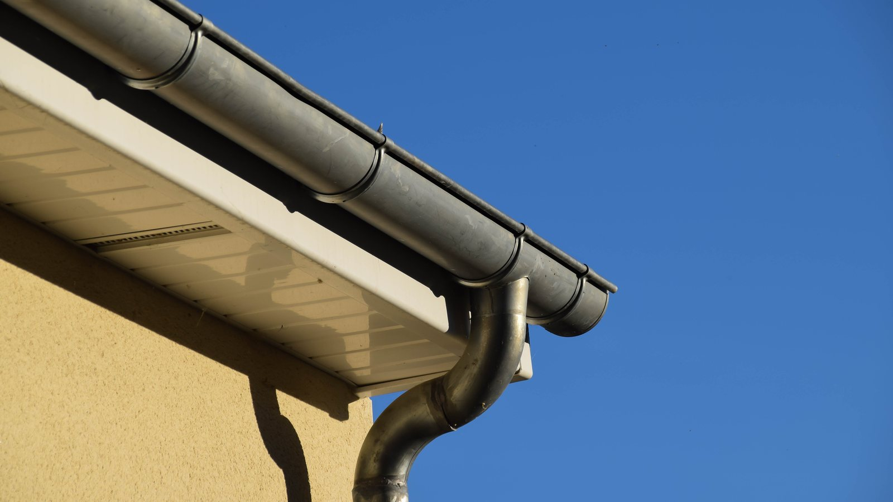

Dachrinnenreinigung in Oldenburg
Wir saugen Laub, Moos und Schlamm vom Boden aus ab. Ohne Leiter, ohne Gerüst und auf Wunsch mit Fotos vom Ergebnis.
Was eine verstopfte Dachrinne anrichtet
Solange nur ein paar Blätter darin liegen, passiert nichts. Kritisch wird es, wenn sich Laub im Rinnenkessel festsetzt und das Fallrohr zusetzt. Dann steht das Wasser, läuft über den Rinnenrand und sucht sich seinen Weg an der Fassade entlang.
Die Folgen sieht man selten sofort. Erst zeigen sich grüne Streifen an der Wand, dann durchfeuchteter Putz, im schlimmsten Fall Wasser im Sockelbereich oder im Keller. Im Winter kommt hinzu, dass stehendes Wasser gefriert und die Rinnenhalter durch das Eisgewicht aus der Verankerung reißt.
Eine Reinigung im Jahr kostet einen Bruchteil dessen, was eine durchfeuchtete Fassade oder eine neue Rinne kostet.
Absaugen statt hochklettern
Die meisten Unfälle im Haushalt passieren auf der Leiter. Für uns ist das ein Grund, gar nicht erst hochzusteigen.
So läuft die Reinigung ab
Ein starker Industriesauger wird über leichte Carbonstangen mit der Rinne verbunden. Am oberen Ende sitzt ein gebogener Saugkopf, der Laub, Moos und Schlamm direkt aufnimmt. Das Material landet im Behälter am Boden und wird von uns mitgenommen.
Eine kleine Kamera an der Stange zeigt uns, was oben passiert. So sehen wir, ob die Rinne wirklich frei ist, ohne dass jemand hinaufsteigen muss.
- Ohne Leiter
- Ohne Gerüst
- Mit Kamerakontrolle
- Bis 12 Meter Höhe
Fallrohre und festsitzende Verstopfungen
Sitzt das Fallrohr zu, reicht Saugen allein nicht. Dann spülen wir die Leitung durch oder arbeiten mit einer Spirale, bis der Abfluss wieder frei ist.
Bei verwinkelten Dächern, Innenrinnen oder Kehlen kommen wir mit der Stange nicht überall hin. In dem Fall sagen wir Ihnen vorher, was wir erreichen können und was nicht.
- Fallrohr durchspülen
- Spirale bei festem Sitz
Was zur Dachrinnenreinigung dazugehört
Standard ist die komplette Rinne. Was darüber hinausgeht, halten wir vorher schriftlich fest.
Rinne komplett absaugen
Laub, Nadeln, Moos und der schlammige Rückstand, der sich am Boden der Rinne festsetzt. Über die gesamte Länge, nicht nur an den zugänglichen Stellen.
Rinnenkessel und Einlauf
Der Übergang zum Fallrohr ist die Stelle, an der es fast immer beginnt. Der Einlauf wird freigelegt und auf Durchfluss geprüft.
Fallrohr prüfen
Wir kontrollieren, ob das Wasser abläuft. Bei Verstopfung spülen wir durch oder arbeiten mit der Spirale, damit die Leitung wieder frei ist.
Sichtprüfung der Rinne
Beim Reinigen sehen wir über die Kamera auch lose Halter, undichte Nähte oder Roststellen. Was auffällt, melden wir Ihnen mit Foto.
Fotodokumentation
Auf Wunsch bekommen Sie Aufnahmen vor und nach der Reinigung. Für Hausverwaltungen der übliche Nachweis gegenüber Eigentümern.
Entsorgung
Das abgesaugte Material nehmen wir mit. Sie müssen weder Säcke bereitstellen noch anschließend etwas wegräumen.
Wann die Dachrinne gereinigt werden sollte
Als Anhaltspunkt. Entscheidend ist, wie viele Bäume in der Nähe stehen und welche Art.
Spätherbst
Der wichtigste Termin. Nach dem Laubfall, aber vor dem ersten Frost. Meist November bis Anfang Dezember.
Frühjahr
Bei Objekten mit vielen Bäumen sinnvoll. Blütenreste, Samen und Wintereintrag werden entfernt, bevor die Regenzeit kommt.
Bei Nadelbäumen
Kiefern und Fichten werfen das ganze Jahr ab. Hier sind zwei Termine im Jahr eher die Regel als die Ausnahme.
Nach Sturm
Nach schweren Stürmen lohnt ein kurzer Blick. Kleine Äste im Rinnenkessel sorgen schnell für einen kompletten Rückstau.
Was Eigentümer wissen wollen
Was kostet die Dachrinnenreinigung in Oldenburg?
Abgerechnet wird nach laufendem Meter Rinne, gestaffelt nach Höhe des Gebäudes. Ein Bungalow ist günstiger als ein dreigeschossiges Mehrfamilienhaus, weil wir dort mit kürzeren Stangen und schneller arbeiten.
Ein Aufschlag entsteht, wenn das Fallrohr zusätzlich freigespült werden muss oder die Rinne seit Jahren nicht gereinigt wurde. Das sehen wir vorher und sagen es Ihnen, bevor wir anfangen.
Wie oft muss die Dachrinne gereinigt werden?
Einmal jährlich im Spätherbst reicht bei den meisten Objekten. Stehen Laubbäume direkt am Haus oder Nadelbäume in der Nähe, sind zwei Termine sinnvoll, im Frühjahr und im Herbst.
Ein guter Indikator: Wenn bei starkem Regen Wasser über den Rinnenrand läuft, ist sie längst überfällig.
Bis in welche Höhe können Sie arbeiten?
Vom Boden aus etwa zwölf Meter, also bis zu drei bis vier Etagen. Das deckt Einfamilienhäuser, Reihenhäuser und die meisten Mehrfamilienhäuser in Oldenburg ab.
Liegt die Rinne höher oder ist sie von unten nicht erreichbar, ziehen wir einen Partnerbetrieb mit Hebebühne hinzu. Fragen Sie an, dann sagen wir Ihnen, ob und wie es machbar ist.
Muss ich zu Hause sein?
Nur wenn wir nicht auf das Grundstück kommen. Ansonsten reicht es, wenn wir freien Zugang rund ums Haus haben. Was wir zusätzlich brauchen: eine erreichbare Außensteckdose für das Saugsystem und, falls das Fallrohr gespült werden muss, einen Außenwasserhahn.
Was passiert mit dem Laub?
Es landet im Behälter des Saugers und wird von uns mitgenommen und entsorgt. Sie müssen nichts bereitstellen und finden hinterher nichts im Beet.
Bekomme ich einen Nachweis?
Auf Wunsch ja. Über die Kamera an der Stange können wir Aufnahmen vor und nach der Reinigung machen. Hausverwaltungen nutzen das regelmäßig als Nachweis gegenüber Eigentümern und Versicherungen.
Reparieren Sie auch defekte Rinnen?
Kleinigkeiten wie lose Halter oder verrutschte Rinnenteile richten wir im Rahmen unseres Hausmeisterservice her. Für undichte Nähte, Rostlöcher oder einen kompletten Austausch ist ein Dachdecker oder Klempner zuständig.
Was wir sehen, melden wir Ihnen mit Foto, damit Sie entscheiden können, bevor daraus ein Schaden wird.
Lohnt sich ein Laubschutzgitter?
Kommt darauf an. Gegen große Blätter helfen Gitter gut. Feine Nadeln, Blütenreste und Moos gehen hindurch und setzen sich darunter fest, wo sie schwerer zu entfernen sind als in der offenen Rinne.
Bei Laubbäumen am Haus kann sich ein Gitter lohnen, bei Nadelbäumen raten wir meist ab.
Warum Eigentümer uns beauftragen
Darauf können Sie sich verlassen
- Seit über 40 Jahren am Markt in Oldenburg
- Absaugen vom Boden aus, ohne Leiter und ohne Gerüst
- Kamerakontrolle statt Vertrauen auf gut Glück
- Entsorgung des Materials inklusive
- Betriebshaftpflicht mit 10 Mio. Euro Deckungssumme
- Hinweis mit Foto, wenn uns Schäden auffallen
Dachrinne, Fassade und Fenster lassen sich gut in einem Termin erledigen, weil die Technik ohnehin vor Ort ist. Mehr zur Objektbetreuung
Angebot anfragen
Schildern Sie uns kurz Ihr Objekt: ungefähre Rinnenlänge, Anzahl der Etagen und ob Bäume in der Nähe stehen. Am hilfreichsten ist ein Foto vom Haus. Wir melden uns mit einem Preis.
- Telefon
- 0441 57060160
- info@olwo-gmbh.de
- Bürozeiten
- Mo. bis Do. 09:00 bis 13:00 und 14:00 bis 16:30 Uhr, Fr. 09:00 bis 13:00 Uhr
Was Kunden über uns schreiben
Seitdem die Objektbetreuung OLWO unser Mehrfamilienhaus betreut, läuft alles reibungslos. Treppenhaus, Garten, Müllplatz, alles immer top gepflegt. Absolut zuverlässig, freundlich und schnell erreichbar.Max Zwick Google Rezension
Ich bin seit mehreren Jahren Kunde bei der OLWO GmbH und mit der Gartenpflege rundum zufrieden. Das Team ist zuverlässig, freundlich und arbeitet sehr ordentlich. Der Garten wird immer top gepflegt.Niklas Zytur Google Rezension
Sie sind stets bereit zu helfen und bewältigen ihre Arbeit, selbst bei schwierigen Umständen wie Wassereinbruch oder der Koordination der Müllabfuhr, mit beeindruckender Kompetenz und Hingabe.Zargoso Bewertung bei golocal
Passend dazu
Fassadenreinigung
Mit OsmoseanlageGrüne Streifen an der Wand sind oft die Folge einer überlaufenden Rinne. Wir bekommen beides weg.
Mehr erfahrenFensterreinigung
Mit OsmoseanlageGlas, Rahmen und Rollläden bis zwölf Meter Höhe, streifenfrei und ohne Hubsteiger.
Mehr erfahrenGartenpflege
Laub aufnehmen, Bäume zurückschneiden. Weniger Eintrag von oben heißt weniger Arbeit in der Rinne.
Mehr erfahrenHausmeisterservice
Lose Rinnenhalter, klemmende Türen, defekte Leuchten. Die Kleinigkeiten am Objekt.
Mehr erfahrenGebäudereinigung
Unterhaltsreinigung und Grundreinigung für Wohnanlagen, Büros, Praxen und Ladenflächen.
Mehr erfahrenWinterdienst
Vom 1. November bis 31. März rund um die Uhr in Bereitschaft, auch an Wochenenden.
Mehr erfahren